Core Value
- Performance, Safety, Compliance
- master in software development
- open source model
- spring reactor, apache?, tokio, civic blockchain
Interest
- pursue innovative computer scientist
- understand the relationship of world entities
- create social value
Research Practice
- review master plan
- watch video on key concept > online course
- summarize learning as reference
Business Case
- strategy: Competitive Advantage, Market size, bayesian probability, PESTAL
- opportunity: increase revenue, reduce cost, increase customer satisfaction, improve operation efficiency
- prioritize milestone (m1-m4) -> target
- financial model: cost-benefit, NPS, DAU, CR, O/d, AOV, NMV, Revenue, Profit,
- risk assessment: dependency, constraint, change impact, opportunity cost
Problem Statement
- problem statement: people, process, tech
- gap analysis: ask 5 why > root cause (c1-c4)
- capability level
Countermeasure
- initialize milestones (m1-m4) -> resolve root causes (c1-c4) -> target
- improve people, process, tech
- logical architecture, solution architecture
Action & Success Criteria
- project timeline (m1-m4)
- stakeholder matrix
- quality management
- change management
- marketing channel
Escalation
- follow-up, blockers
Summary
- signature
Legal
- Business Consultant Agreement Template (for vendors)
- Non-Competition Agreements Agreement Template (for employees)
- Non-Disclosure Agreement Template (for partners)
- Pricing option, Terms & Conditions (for customers)
- Investor & Startup Term Sheet Template (for investors)
Maths
$$ \mu = \frac{1}{N} \sum_{i=0} x_i $$
Modern Unix command
bat: modern ofcatexa: modern ofls, e.g.$exa --git -l --treefd: modern offind, e.g.$fd ^foorg: modern ofgrepjq: sed for json datacheat: cheatsheet, modern ofmantldr: modern ofmanbtm: modern oftop,bottomglances: modern oftopdog: DNS client, modern ofdighyperfine: benchmarking toolgping: modern ofpingcurlie: modern ofcurldust: modern ofdu, disk usage statistic by fileduf: modern ofdu, show disk free spacewrk: monitoring and benchmark
ssh - Send file to remote ssh host
$SSH username@ip-address: login into a remote Linux machine using SSH$put file: upload ‘file’ from local to remote computer$get file: Download ‘file’ from remote to local computer$quit: Logout
tar - compression
$ tar cvzf archive_name.tar dirname/: compress
$ tar xvf archive_name.tar: uncompress
sed - text processor
$sed 's/.$//' filename: Print file content in reverse order
$sed -n '1!G;h;$p' thegeekstuff.txt Add line number for all non-empty-lines in a file
awk - remove duplicate lines using awk
$ awk '!($0 in array) { array[$0]; print }' temp
sort - sort file in ascending order
$sort names.txt
xargs - exectue util
$ls *.jpg | xargs -n1 -i cp {} /external-hard-drive/directory: search all jpg images in the system and archive it.$find / -name *.jpg -type f -print | xargs tar -cvzf images.tar.gz$cat url-list.txt | xargs wget –c: Download all the URLs mentioned in the url-list.txt file
service - Check the status of all the services.
$service --status-all
IO Direction
$cmd < file: Input of cmd from file$cmd1 <(cmd2): Output of cmd2 as file input to cmd1$cmd > file: Standard output (stdout) of cmd to file$cmd > /dev/null: Discard stdout of cmd$cmd >> file: Append stdout to file$cmd 2> file: Error output (stderr) of cmd to file$cmd 1>&2: stdout to same place as stderr$cmd 2>&1: stderr to same place as stdout$cmd &> file: Every output of cmd to file
Pipes
$cmd1 | cmd2: stdout of cmd1 to cmd2$cmd1 |& cmd2: stderr of cmd1 to cmd2
Command Lists
$cmd1 ; cmd2: Run cmd1 then cmd2$cmd1 && cmd2: Run cmd2 if cmd1 is successful$cmd1 || cmd2: Run cmd2 if cmd1 is not successful$cmd &: Run cmd in a subshell
Reference
git advance topics
- branching strategy
- pull request
- conflict resolution
- commit message best practices
git client setup
brew uninstall git-flow(if ver 1.4. gitflow installed)brew install git-flow-avh, 1.12.3 (AVH Edition)git config --global user.email "name@mail.com": setup emailgit config --global user.email: check setup email
github repo setup
- create github repo in organization
gh repo clone waxctech/waxctech.github.ioin $home/Repogit remote: if repo has been created in local, add reference link to remote repo to local repo- add member to access repo
- enable github page -> in github > setting > pages > enable github pages, source = /docs
- create github project with automated review workflow
gitflow setup
- on gitflow plugin, select
gitflow init: create gitflow structure, local/develop - push local/develop to remote/develop: due to missing in gitflow4idea plugin @TODO to fix
gitflow branching: procedure for each new task
- first thing first: fetch remote and update local
- on codestream plugin, create new issue (label: feature, bug, release, hotfix)
- open gh ticket, assign project
- on gitflow,
Start Feature: usename of issue ticket_#ticket numberin github, e.g. "issue_#1" - commit changes to local/feature branch, do NOT push local/feature
- when work done, always check conflict before PR:
- fetch all
remote - update all
local
- fetch all
- if conflicted, rebase:
- checkout
local/develop - rebase
local/mainonlocal/develop - checkout
local feature/issue_#1 - rebase
local/feature/issue_#1ontolocal/develop - on gitflow,
Publish Feature: push changes from local/feature to remote/feature
- checkout
- on codestream, create Pull Request
- use branch name as PR name
- change base from
maintodevelop - assign PR to project
- perform code review by reviewer
- use
squash and mergedto merge changes from remote/feature to remote/develop - update remote/develop to local/develop
- on gitflow,
Finish Feature: delete feature branch, auto push from local/develop to remote/develop - resolved gh issue would be moved to done column by automation
for
Start Release, repeat the same flow forrelease-v0.1.0but only hotfix is allowed for merging changes from develop should be blocked
commit message best practice
- do not use force push
- only commit changes on the same topic
- commit message:
subject = issue ticket name and #number
<empty line>
Body = detail explanation, diff than before, reason for changes, anything to watch out for?
resolves: #ticket_number
branching strategies: gitflow vs github flow
- use gitflow for multi teams, complex workflow before go-live
- using github flow for few branches small commits but required high quality QA test automation
- long running branch (main or dev) vs short lived branches (e.g. feature)
.ignore vs .git/info/exclude
- files/ignore rules that have to be universally ignored should go in .gitignore
- otherwise files that you want to ignore only on your local clone should go into .git/info/exclude
conflict resolution in github flow
- github flow w/ local merge (remote main > local feature > local main > github flow)
- if remote is blocked, do local merge first to keep local main with the latest changes
git checkout featuregit diff maingit merge main
undo a conflict and start over
git merge --abortorgit rebase --abort
temp storage for changes instead of commit
git stash
undo changes
git revert(preferred) append commit applies inverse changesgloga// git log with graph decorator
folk vs clone
- git folk is to create a copy of repo from one github account into your github account
- clone is from your repo to local.
fetch vs pull
- fetch: only check and retrieve meta data from remote (without code merged)
- pull: copy change from remote (with code merged)
- update: intellij feature which combines fetch + pull
github flow (deprecated by gitflow)
- workflow: remote main > local feature > remote feature > remote main > local main
git branch: check the current branchgit checkout -b feature-PLAT-1: - b create a new branchfeature-<jira project key>-<jira ticket number>: branch naming conventiongit checkout feature-PLAT-1: switch to existing feature branch- write code for feature platform ticket
git status: list all changes since last commit. alias:gstgit add .: if newly created, stage changes in local. alias:gaagit commit -am "resolved #PLAT-1": commit changes in local using comment convention 1. alias:gcamgit diff main: compare difference between feature and main. alias:gd- clean up your code with an interactive rebase before submitting your pull request.
git push -u origin feature-PLAT-1// push changes to remote; origin refers to remote/feature repo- create Pull Request on github by author
- perform quality metrics and change review on github by reviewer
- merge pull request from remote/feature to remote/main by approver
git checkout main// switch back to main branchgit pull main// sync changes from remote/main to local/maingit branch -d feature-PLAT-1// delete local feature branch
Reference
interactive git cheat sheet basic git video by freecodecamp advanced git video by freecodecamp git tutorial by gitkraken merge vs rebase how to gitflow: git tutorial by altlassian gitflow tutorial gitflow4idea plugin good commit message
Statistics as of 2022 Jan
Rust developers in discord - around 40k active ~ 0.2% total dev 25m worldwide -> 50% JS, 50% Java & Python.
modern programming focus
- speed, stability, concurrency, functional programming
editor
fn main() { let number = 5; print!("{}", number); }
install rustup
curl --proto '=https' --tlsv1.2 -sSf https://sh.rustup.rs | sh
update rustup
rustup update
cargo new project
cargo new hello_world --bin --vcs git
print out struct
#[derive(Debug)]
println!("{:?}", user);
training path
- cheat sheet
- overview - Rust in Motion
- MSFT training 5.5h
- The book & tour of rust
- Advance Rust for Rustaceans
- basic Rust cook book
- complete Rust by Example & extended
- Rust Design Pattern
- CS242 Programming Languages (in Rust)
- machine learning in Rust
- hacking in Rust
- Network Programming with Rust - parsing JSON with serde, networking, http, tcp, udp with tokio
- MEAP - Rust Web Development
- downstream service - Zero to production in rust
- microservice in AWS as hyper, Tokio, and Actix, REST, Docker, Reactive, AWS lamdba
video course
- 24h intermediate - crust of rust -lifetime, macros, iterators, smart pointers, channels, sort & algro, subtypes, variance, drop check, atomics, mem ordering, dispatch, await, function, trait
- 7h data structure and algorithm
- str, string, complexity, & sorting, linked list & binary trees, graph, hashmap, entity component, persistence.
- 3h CLI search, parser, chat, blog, tokio, actix, db
- 1h real-time service - chat with tokio
- 6h upstream service - advance data stream in Rust
- 7h process - build HTTP server
- 12h batch job - Build a Stock-Tracking CLI With Async Streams in Rust
- 3h System programming by Nathan Stocks
- 3h game development by Nathan Stocks
- 2h reusable code by Shing Lyu - functional, generics, std
- 3h Eduonix Learning - Rc and ARC, trait, error handling, serde
Reference
rust forge - docs for rust lang rust compiler development rust internal forum rust exercises Rust Awesome List Are we web yet web framework comparison book list Finite State Machine state machine pattern
cloud framework
rust serverless in aws rust in cloudflare worker actix web framework data class in rust meilisearch engine sonic search simulation modelling enso - low-code data science weave - k8s & gitops, firecracker linkerd: servicemesh TiKV - tx KV database xsv - process cvs file arload - arweave uploader CQRS-ES
beam and jvm
Rustler - calling Rust from elixir good article on Rust vs erlang Mnesia real time database Rust and the JVM
Asynchronous programming
Asychornous Runtime Rayon - parallel programming actors with tokio eventador - lock free event bus inspired by LMAX Disruptor LMAX disruptor pattern
Futures and async. This is: tokio, futures-rs and async-std. Threadpools: Rayon and threadpool. Thread-safe data structures: crossbeam.
The first category is about waiting for a whole bunch of things at once. For example if you have a web server, you spend most of the time waiting for I/O to send and receive a message. Futures allow you to compute other stuff while you wait for the response.
The second category is about doing a whole bunch of things at once. The rayon library is based on the principle of solving problems with divide and conquer. You have a problem. You split it up into smaller problems, which can be run on separate threads in a thread pool. Then you combine the results and you have your answer. As for the threadpool library, it also let's you spawn many tasks on a thread pool, but it's more primitive.
Crossbeam just gives you various data structures and algorithms that are useful when doing things on multiple threads. For example it provides various queues that allow pushing and popping items from several threads without a mutex.
Web development
standard library edition guide rustdoc book cargo book rustc book compiler error index CLI app in Rust WASM book creative projects - 2D game
are we yet list
are we yet list async distributed IPFS machine learning
The Difference between Functional Programming and Object-Oriented Programming
Plantuml Installation
$cargo install mdbook-graphviz$cargo install mdbook-plantuml: require to change source code for "graphviz"$brew install graphviz: current 3.0.0$brew install plantuml: current 1.2022.5- for C4, remove any string after @startuml, otherwise mdbook will not render
install mdbook preprocessor in book.toml
[preprocessor.plantuml]
plantuml-cmd="/usr/local/bin/plantuml"
Container View
- sample with links, showing connection protocol between services

System Context View
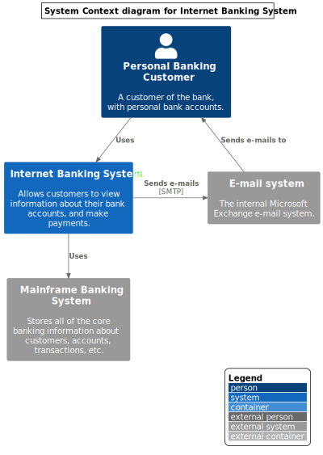
Container View - shows application, service, microservice, etc

Component View

System Landscape View

Dynamic View
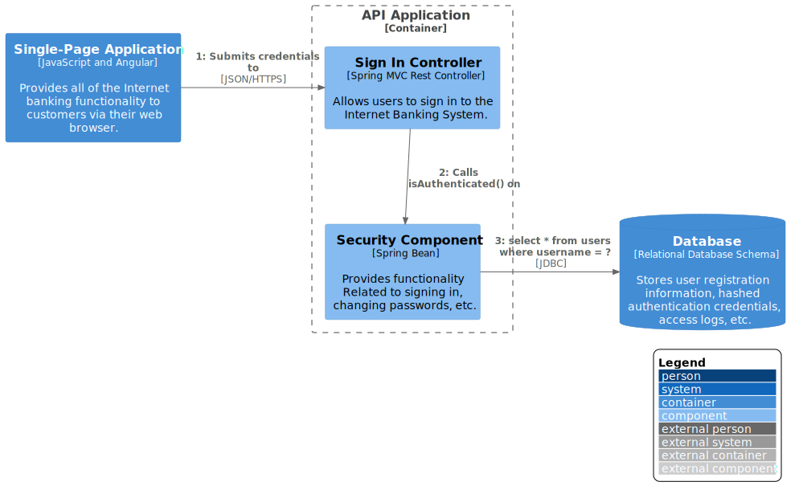
Deployment with Detail View
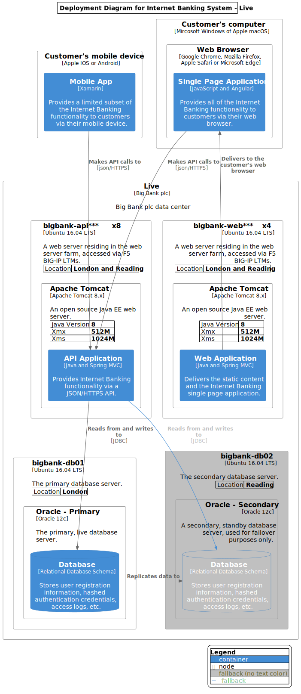
Container View on Messaging Bus
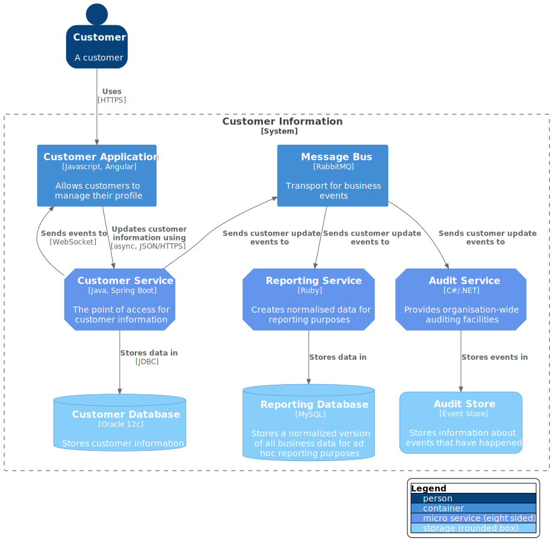
Reference:
- C4 core diagram
- C4 modelling
- graphviz
- cloud arh
- C4-PlantUM
- plantuml
- aws plantuml
- asciidoc
- VISUALIZATION GRAMMARS
- vega-lite
- kroki - using it to support vega ?
- mermaid demo
- cargo dependency graph
- Tutorial on Plantuml
Common Usage and Example
- Architecture: C4 modelling, AWS, Azure, kubernetes, Elastics
- Programming: class, sequence, activity, parallel processing, state machine, process timeline, swagger open API
- Build & Configuration: cargo, gradle, terraform, ansible
- Network: DNS, trace route, Firewall, routing, apache log, gpg/pgp, sitemap, isp mapper, tcpdump
- Data translation: json, db schema, Text read stdin, xml sql
- AI: keras neural network, Word formation, Topic extraction
- Profiler
- Knowledge map
- Domain storytelling
- Org chart WBS
- Gantt chart
- Material design icon
- Directed/ undirected graph, Mindmap
Sequence
- used for complex flow on calling external system

Class
- used for design pattern

Activity / Workflow
- used for complex workflow
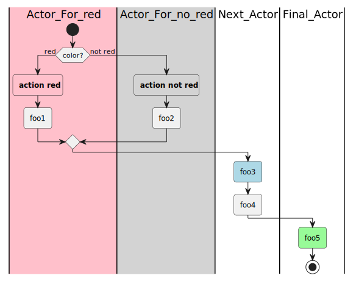
Parallel Processing
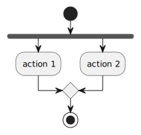
State Machine
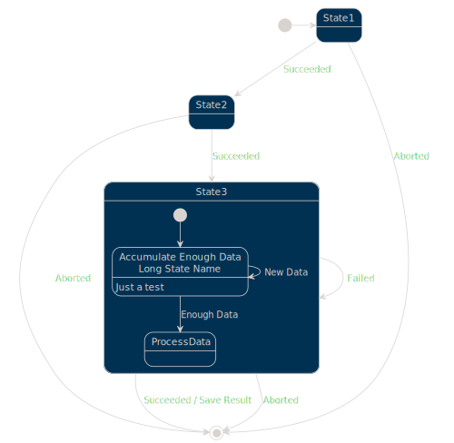
Timeline
- used to show lead time on each process

Network

JSON Specification
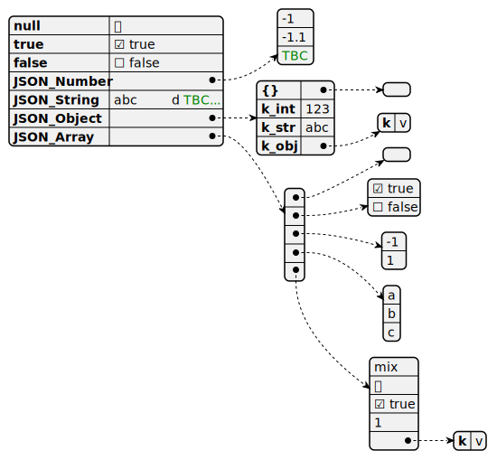
DITAA - DIagrams Through Ascii Art
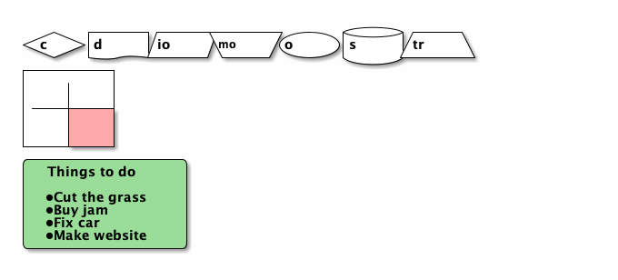
Gantt Chart

Mindmap
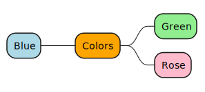
Org Chart / WBS

Amazon Labs AWS

Azure Cloud

Elastic Search - ELK
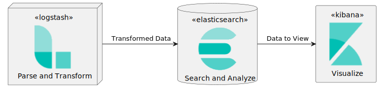
Kubernetes
PlantUML rendering error: PlantUML did not generate an image, did you forget the @startuml, @enduml block (/usr/local/bin/plantuml -tsvg -nometadata /var/folders/th/c_6w7gtd299fh13whmfhgsq80000gn/T/.tmpPf5Nti/bea6074f3e96ab33929173613e1100c0b6b7bb2f.puml)?
Domain Storytelling

Material Design Icon
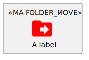
Directed Graph
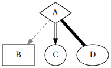
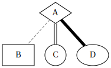
Theme
list of official theme gallery
- mars
- blueprint
jira setup
- create jira project -> link to github (same name)
- in jira app, github configure -> connect github organization.
- if project not shown codestream, reinstall codestream intellij plugin
- use codemarks instead of bookmark
daily task on codestream
- create issue
- issue -> start work (move issue to in process & start feature branch)
- commit with jira ID, e.g. WAXC-1, comment with resolves WAXC-1
- create PR
- review and approve merge
- delete remote/feature branch
- mark issue as 'Done'
TODO in jira:
- build
- deployment
- feature flags